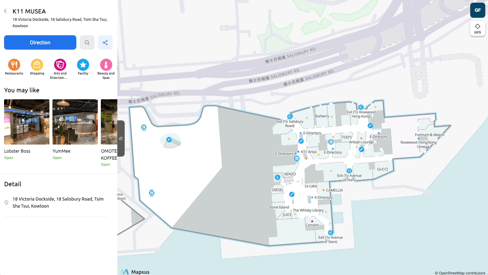

Indoor Map App
Mapxus Anywhere is the company's flagship indoor navigation product, an interactive map that enables real-time positioning, search, and route guidance within complex indoor spaces. I led the user research, defined the user experience, and drove the product to launch.

Research
Research revealed a consistent gap in how people navigate indoors versus outdoors. Participants were comfortable with GPS-based apps in outdoor environments, but indoors they defaulted to static maps or approached customer service desks. The key finding was not that people lacked interest in digital indoor navigation, it was that nothing had yet met their expectations for real-time, interactive guidance in those spaces.
Participants were specific about what they needed: the ability to locate points of interest, understand their position relative to the space, and find accessible routes. These informed the core feature set and priority order for the product.

Design
My design brief was to make powerful positioning technology feel invisible, the more complex the system, the simpler the experience needed to be. I studied the underlying technology in depth: Mapxus's Indoor Positioning System uses Wi-Fi fingerprinting to determine location from signal patterns, combined with Pedestrian Dead Reckoning (PDR) for step-by-step displacement tracking. Understanding how the system worked let me design around its constraints and latency characteristics rather than against them.
The design principle throughout was minimising cognitive load: familiar interaction patterns, information presented only when needed, and a reduced number of steps for common tasks. The more capable the underlying technology, the more restraint was required in the interface.

One deliberate decision was to differentiate the mobile and desktop navigation experiences. Desktop users are unlikely to be walking through a venue, so rather than replicating the mobile navigation flow, the desktop version displays a QR code directing users to their phone, where navigation makes practical sense.


Launch
The app launched on Google Play and the App Store after six months of development. It is also available as a web app and as an SDK for third-party integration.